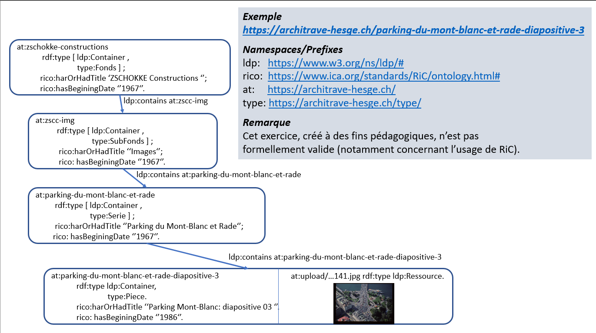

HEG-796-22-020
LDP en pratique
Jan Krause-Bilvin
2023-04-27
Thème de cette session
- Plateforme LDP Fedora Commons
- Description archivistique Records in Context et l’ontologie RiC-O
Cours précédent
- Linked Data Platform (LDP):
- Ressources (ldp:Ressource) de type RDF et non-RDF
- Conteneurs (ldp:Container), peuvent être emboîtés.
- Manipulation via verbes HTTP (GET, POST, PUT, DELETE).
- Les conteneurs LDP permettent de délimiter les ressources représantant des objets (métier, archivistiques).
- OAIS: objet archivisitque = Archival Information Package (AIP).
Records in Context
RiC existe sous deux formes:
- Le modèle conceptuel: RiC-CM
- L’ontologie OWL: RiC-O
RiC-O est l’implémentation technique de RiC-CM, pour l’instant la seule.
- RiC-CM est un modèle entité relation. Tout comme IFLA LRM.
- Toute entité est une chose (Thing) et se déciline en différentes classes.
- Les entités sont liées par des relations.

RiC-O : principes
- Ontologies de référence/domaine de l’archivage
- Utilisable immédiatement
- Flexible (granularité variable)
- Nouveaux potentiels (interprétable/SPARQL, instantiations)
- Extensible (autre contextes que les archives, combinaison)
Des concepts complétant RiC-CM ont été développés pour créer RiC-O, p.ex.:
- rico:Type : gestion de types d’entités, utiles pour caractériser les entités et se lier à d’autres ontologies/vocabulaires comme W3C-SKOS.
- rico:Proxy : intéger un record dans plusieurs record sets (ex: un document élaboré par deux services).
- rico:Place : les lieux peuvent évoluer au cours du temps (ex: frontières qui se déplacent, sur plus de 500 ans dans le cas de la Suisse), voir aussi linked-places.
Quelques concepts clés de RiC-O (centrés sur les records):
Url de l’ontologie. Quelques exemples:
- Titre: rico:title
- Créateur: rico:hasCreator
- Type: rico:hasRecordSetType
- Hierarchie:
- État: rico:hasRecordState
- Date: rico:hasBeginningDate , rico:hasEndDate
Correctif exercice TP

Gesion des containers via l’interface web
Créer un container (interface Web)

Dans la boite de dialogue “RDF Turtle”, insérer:
<>
<https://www.ica.org/standards/RiC/ontology#title>
"Le titre du record".Cliquer ensuite sur le bouton “Add” comme dans la capture d’écran ci-avant.
A noter que le container est créé comme enfant du container courrant.
Modifier un container (Web)

Dans la boite de dialogue “Update Properties”, remplacer:
DELETE { }
INSERT { }Par
DELETE{ <> <https://www.ica.org/standards/RiC/ontology#title> "Le titre du record". }
INSERT{ <> <https://www.ica.org/standards/RiC/ontology#title> "Le nouveau titre du record". }Puis cliquer sur le bouton “Update”.
Cf. capture d’écran ci-avant.
Créer une ressouce binaire

Dans la section “Create New Child Ressource”, choisir “Type” : “binary” dans la liste déroulante comme dans la capture d’écran précédente.
Puis cliquer sur “Parcourir” (ou “Browse”) pour sélectionner le fichier à envoyer dans Fedora.
Valider en cliquant sur le bouton “Add”.
Gestion des containers par HTTP
Les verbes standard standard sont utilisés (API rest):
- Accéder : GET
- Créer / Mettre à jour : POST / PUT
- Supprimer : DELETE
Rappel: python
Dans le contexte de la HEG, python est installé sur les postes via l’outil Anaconda.
Pour l’exécutér, ouvrir:
Windows > Menu démarrer > Anaconda promptPuis tapper:
pythonet enter.
Python sur ordinateur personnel
Dans le cadre d’une installation classique de Python 3 (téléchargement), installer le paquet “requests” si ce n’est pas déjà fait:
Sous Linux:
pip3 install requestsou
pip install requestsSous Windows:
python -m pip install requestsSous MacOS:
sudo easy_install pip
sudo pip install --upgrade pip
Accéder à une ressource
import requests
url = 'http://localhost:8080/rest/record/9a3f45'
r = requests.get(url)
print('Status code:', r.status_code)
print(r.text)
Créer un container
import requests
url = 'http://localhost:8080/rest/record/monDossier'
headers = {"Content-Type": "text/turtle"}
auth = ('fedoraAdmin', 'fedoraAdmin')
data = """ <> <rico:title> 'Ceci est le titre'.
<> <rico:scopeAndContent> 'Voilà la description'.
"""
r = requests.put(url, auth=auth, data=data.encode('utf-8'), headers=headers)
print( 'Status:', r.status_code )
print( r.text )Mettre à jour un container
import requests
url = 'http://localhost:8080/rest/record/monDossier'
headers = {"Content-Type": "text/turtle"}
auth = ('fedoraAdmin', 'fedoraAdmin')
data = """ <> <rico:title> 'Ceci est le titre mis-à-jour.'.
<> <rico:scopeAndContent> 'Et la description revue'.
"""
r = requests.put(url, auth=auth, data=data.encode('utf-8'), headers=headers)
print( 'Status:', r.status_code )
print( r.text )Voir les section Versionning : “View Versions”
Créer une ressource binaire
Le code suivant suppose qu’une ressouce binaire nomée “image.jpg” se trouve dans le répertoire depuis lequel vous lancez votre script Python.
import requests
import os
filename = 'image.jpg'
mimetype = 'image/jpeg'
data = open(filename,'rb').read()
url = 'http://localhost:8080/rest/records/monDossier/binary'
auth = ('fedoraAdmin', 'fedoraAdmin')
headers = { "Content-Type": mimetype,
"Link" :"<http://www.w3.org/ns/ldp#NonRDFSource>; rel=type"}
r = requests.put(url, auth=auth, data=data, headers=headers)
print( 'Status:', r.status_code )
print( r.text )Versionning RFC 7089 (Memento)
Memento est le protocol de navigation temporel du Web.
- Par défaut, Fedora Commons conserve toutes les versions des ressources.
- Il est possible de personnaliser ce fonctionnement.
- Cela perment de naviguer dans le temps (p.ex. mise à jour du plan de classement).
Voir aussi: Memento at W3C Timetravel, avec cet exemple et celui-ci.